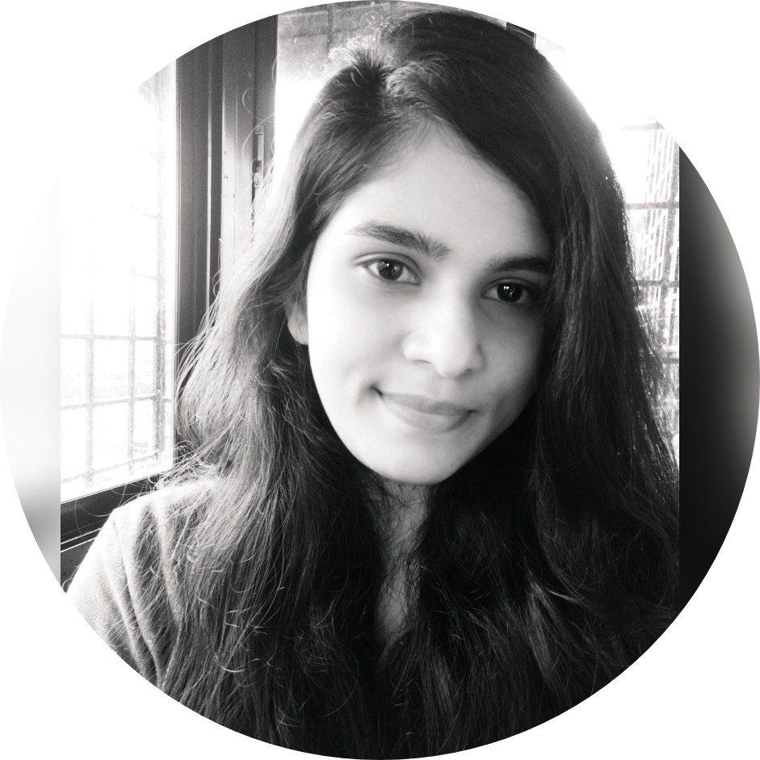

|  |
Bhakti BanaulikarBachelor of Electronics and Telecommunication Engineering |
| Education Level | School/College | Year | Percentage |
|---|---|---|---|
| Secondary School Certificate (SSC) | St. Joseph's Institute Vasco Goa | 2013 | 81% |
| Higher Secondary School Certificate (HSSC) | Deepvihar Higher Secondary School Sada Goa | 2015 | 72% |
| Bachelor of Engineering (BE) | Padre Conceicao College of Engineering Verna Goa | 2015-19 | 64% |
|
|---|